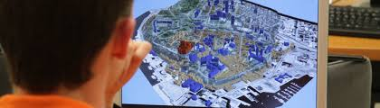
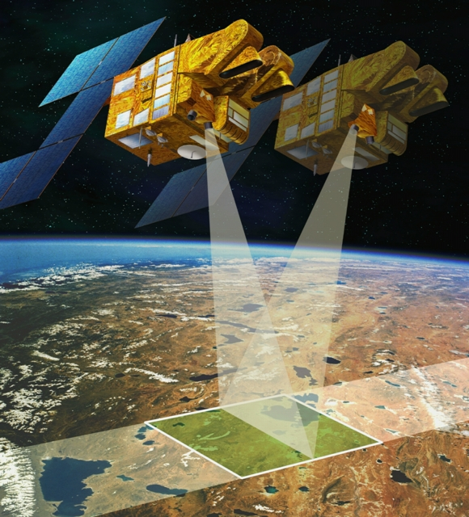
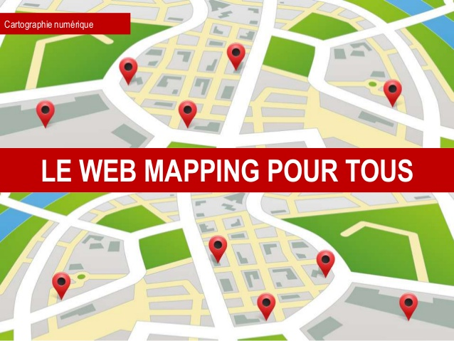

La géomatique regroupe l'ensemble des outils et méthodes permettant d'acquérir, de représenter, d'analyser et d'intégrer des données géographiques. La géomatique consiste donc en au moins trois activités distinctes : collecte, traitement et diffusion des données géographiques.
Le mot « géomatique » est issu de la contraction des termes géographie et informatique.
La géomatique est étroitement liée à l'information géographique, qui est la représentation d'un objet ou d'un phénomène localisé dans l'espace. Le domaine de la géomatique comprend les SIG. Il est donc plus large que ce dernier.
Les professionnels travaillant à l'étude de la géomatique et de ses logiciels sont appelés des géomaticiens (chef de projet ou ingénieur en système d'information géographique, administrateur SIG, technicien cartographe ou en traitement des données, gestionnaire de bases de données spatiales, architecte SIG…).
Le traitement des données géographiques est souvent effectué dans des logiciels spécialisés appelés SIG (systèmes d'information géographique, en anglais GIS) — il en existe une petite dizaine: ArcGIS d'ESRI, GeoConcept de la société éponyme, Intr@Geo de la société Géosphère, MapInfo importé par Pitney Bowes, StarGIS, Apic et Elyx de la société STAR-APIC,
GeoMedia de chez Intergraph, AutoCad Map chez Autodesk ou bien le Groupe Articque Informatique9 avec Mapanddata et Cartes & Données. D'autres logiciels existent sur des métiers plus ciblés, comme EdiTop de chez Sirap pour les communes, etc. Les logiciels SIG étant souvent très chers, ce domaine connait une croissance exponentielle des logiciels libres[réf. nécessaire] tels que Grass, Jump, Udig, Quantum GIS, GvSIG, NASA World Wind…

La télédétection désigne, dans son acception la plus large, la mesure ou l'acquisition d'informations sur un objet ou un phénomène, par l'intermédiaire d'un instrument de mesure n'ayant pas de contact avec l'objet étudié.
C'est l'utilisation à distance de n'importe quel type d'instrument (par exemple, d'un avion, d'un engin spatial, d'un satellite ou encore d'un bateau) permettant l'acquisition d'informations sur l'environnement. On fait souvent appel à des instruments tels qu'appareils photographiques, lasers, radars, sonars, lidars, sismographes ou gravimètres.
La télédétection moderne intègre normalement des traitements numériques mais peut tout aussi bien utiliser des méthodes non numériques.
La télédétection spatiale, dans le domaine de l'astronautique, est l'ensemble des connaissances et des techniques utilisées pour déterminer les caractéristiques de la surface et de l'atmosphère de la Terre ou d'une autre planète, par des mesures effectuées à partir d'un engin spatial évoluant à distance convenable de cette dernière.
Le terme correspondant en anglais est remote sensing from space.
Ce type de méthode d'acquisition utilise normalement la mesure des rayonnements électromagnétiques émis ou réfléchis des objets étudiés dans un certain domaine de fréquences (infrarouge, visible, micro-ondes).
Ceci est rendu possible par le fait que les objets étudiés (plantes, maisons, surfaces d'eau ou masses d'air) émettent ou réfléchissent du rayonnement à différentes longueurs d'onde et intensités selon leur état. Certains instruments de télédétection utilisent des ondes sonores de façon similaire, et d'autres mesurent des variations dans des champs magnétiques ou gravitaires.
Alors que l'astronomie pourrait être considérée comme de la télédétection (poussée à l'extrême), le terme télédétection est généralement réservé aux observations terrestres.

La cartographie en ligne - en anglais : web mapping, ou webmapping - est la forme de la cartographie numérique qui fait usage d'Internet pour pouvoir produire, concevoir, traiter et publier des cartes géographiques. Elle repose sur les services Web dans la logique du cloud computing.
Avec le Web 2.0, de nombreux services Web cartographiques sont apparus (cf palette en fin d'article). Certains sont « propriétaires », tels que Google Maps, Google Earth, Bing Maps, etc. D'autres sont basés sur des démarches coopératives libres, tel que OpenStreetMap.
Les SIG Web sont une manière de faire du "Web mapping". Des logiciels, basés sur trois composantes (client, serveur et données) permettent aux gestionnaires de publier des données en ligne et aux utilisateurs d'accéder à celles-ci en les visualisant. C'est le cas de GeoServer, MapServer ou encore ArcGIS Server.
Des systèmes nationaux dits de « Géoportail » ont été mis en ligne par plusieurs pays. Ils utilisent la cartographie en ligne pour mettre à disposition des usagers, sur Internet, divers renseignements administratifs.